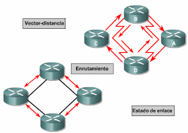

Redes Informaticas
Aca Te Informaremos Sobre El Protocolo de Información de Encaminamiento, Routing Information Protocol (RIP)
¿Qué es el Protocolo de Encaminamiento (RIP)
Routing Information Protocol (RIP), es un protocolo de puerta de enlace interna o interior (Interior Gateway Protocol, IGP) utilizado por los routers o encaminadores para intercambiar información acerca de redes del Internet Protocol (IP) a las que se encuentran conectados. Su algoritmo de encaminamiento está basado en el vector de distancia, ya que calcula la métrica o ruta más corta posible hasta el destino a partir del número de "saltos" o equipos intermedios que los paquetes IP deben atravesar. El límite máximo de saltos en RIP es de 15, de forma que al llegar a 16 se considera una ruta como inalcanzable o no deseable. A diferencia de otros protocolos, RIP es un protocolo libre, es decir, que puede ser usado por diferentes routers y no únicamente por un solo propietario con uno como es el caso de EIGRP que es de Cisco Systems.
Caracteristicas
-Tiempo de convergencia: el tiempo de convergencia define con qué rapidez los routers de la topología de la red comparten información de enrutamiento y alcanzan un estado de conocimiento constante. Cuanto más rápida sea la convergencia, más preferible será el protocolo. Los loops de enrutamiento pueden ser el resultado de tablas de encaminamiento incongruentes que no se han actualizado debido a la lenta convergencia de una red sujeta a cambios. -Escalabilidad: la escalabilidad define cuán grande puede ser una red según el protocolo de encaminamiento que se implementa. Cuanto más grande sea la red, más escalable debe ser el protocolo de enrutamiento. -Sin clase (uso de VLSM) o con clase: Los protocolos de enrutamiento sin clase incluyen la máscara de subred de las actualizaciones. Esta función admite el uso de la Máscara de subred de longitud variable (VLSM) y una mejor sumarización de ruta. Los protocolos de enrutamiento con clase no incluyen la máscara de subred y no admiten la VLSM. -Uso de recursos: el uso de recursos incluye los requisitos de un protocolo de enrutamiento, como por ejemplo, el espacio de memoria, y la utilización de la CPU y el ancho de banda del enlace. Una mayor cantidad de requisitos de recursos exige hardware más potente para admitir el funcionamiento del protocolo de encaminamiento además de los procesos de reenvío de paquetes. -Implementación y mantenimiento: la implementación y el mantenimiento describen el nivel de conocimiento requerido para que un administrador de red ponga en práctica y mantenga la red según el protocolo de encaminamiento aplicado.
Versiones de Protocolos de Encaminamiento
En la actualidad existen dos versiones de RIP: RIPv1, RIPv2. También existe la versión RIpng, para IPv6.
RIPv1
La definición original, recogida en el RFC 1058, define RIP como un protocolo de enrutamiento con clase, es decir, basado en las clases de las direcciones IP. Por tanto, RIPv1 no soporta máscaras de tamaño variable (VLSM) ni direccionamiento sin clase (CIDR). Esto implica que las redes tratadas por este protocolo deben tener la máscara de red predefinida para su clase de dirección IP, lo que resulta poco eficiente. Además, RIPv1 tampoco incluye ningún mecanismo de autentificación de los mensajes, haciéndolo vulnerable a ataques cibernéticos.
Utiliza UDP para enviar sus mensajes a través del puerto 520.
RIPv2
Debido a las limitaciones de la versión 1, se desarrolla RIPv2 en 1993, y se estandariza finalmente en 1998.3 Esta versión soporta subredes, permitiendo así CIDR y VLSM. Además, para tener retrocompatibilidad con RIPv1, se mantuvo la limitación de 15 saltos si se está usando el protocolo OSPF o cualquier otro que sirva para direccionamiento en el enlace.
Se agregó una característica de "interruptor de compatibilidad"para permitir ajustes de interoperabilidad más precisos. RIPv2 soporta autenticación, utilizando uno de los siguientes mecanismos: no autentificación, autentificación mediante contraseña, y autentificación mediante contraseña codificada mediante MD5 (desarrollado por Ronald Rivest en 1997). Su especificación está recogida en los RFC 1723 y RFC 4822.
RIPv2 es el estándar de Internet STD56 (que corresponde al RFC 2453).
RIPng
RIP para IPv6. Se rige por la RFC 2080.

INFORMACIÓN
Ventajas

RIP es más fácil de configurar (comparativamente a otros protocolos). Implementa un algoritmo de encaminamiento más simple que otros protocolos, por lo que el cálculo de la "mejor" ruta (comparativamente en encaminadores de similares prestaciones) es más rápida. Es soportado por la mayoría de los fabricantes. El protocolo EIGRP de Cisco, patentado por ellos, salva la principal desventaja del nativo protocolo RIP porque valora la mejor métrica, además del número de saltos y otros criterios (ancho de banda, congestión, carga, retardo, fiabilidad, etc.), haciendo más eficiente la red.
¿Còmo funciona el Protocolo de Encaminamiento?
La principal función de los protocolos de encaminamiento para redes malladas inalámbricas es seleccionar el camino entre el nodo fuente y destino de una manera rápida y fiable. Estas redes pueden utilizar los protocolos de encaminamiento de otras redes ya existentes, pero modificándolos para que funcionen correctamente con ellas. En este trabajo se analizan distintos protocolos de encaminamiento y se presentan sus descripciones para luego compararlos de acuerdo al Tipo de Protocolo, Alcance de trasmisiones y Métrica de ruteo.
Desventajas

Su principal desventaja consiste en que para determinar la mejor métrica, únicamente toma en cuenta el número de saltos, descartando otros criterios (ancho de banda, congestión, carga, retardo, fiabilidad, etc.). El límite máximo de saltos es menor que el de otros protocolos, de forma que solo se puede utilizar en redes de tamaño mediano o pequeño. RIP tampoco está diseñado para resolver cualquier posible problema de enrutamiento. El RFC 1720 (STD 1) describe estas limitaciones técnicas de RIP como graves y el IETF está evaluando candidatos para reemplazarlo, dentro de los cuales OSPF es el favorito. Este cambio está dificultado por la amplia expansión de RIP y necesidad de acuerdos adecuados. El tiempo de convergencia es largo. Sólo se puede utilizar para redes pequeñas.